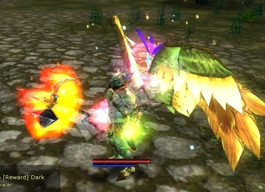

Battle Priest
Priests are a stalwart and a mandatory component in any fully fledged party composition. Whether it is to kill monsters or PvP, a group relies entirely on a priest's heals and other various buffs (and debuffs) to properly clear most of the game content.
Role
If there is one class in Knight Online that you could consider a core part of any group composition, that would be the Priest class.
The priest class role is to keep their party alive through the use of heals and buff, while weakening their enemies with multiple debuffs that affect their combat performance. Some other classes, like Warriors, rely solely on the Priest's support to contribute in a meaningful way in any game mode.
A priest can assume a more offense related role with the right configuration, but outside PvE, it's mostly seen as a gimmick.
Attributes
A priest heals, buffs, debuffs. But you can only specialize in two of the three.
The heal skill tree is a must have. With it, you can heal your entire party to full with a single press of a button, while also providing solid restoratives abilities. They can also create healing potions by interacting with an NPC in their main towns respectively.
The buff (Aura) skill tree has its main purpose in increasing your party members base stats, such as their health, defense and resistances. However, its most defining ability is Bless of God. A party-wide debuff removal skill with no cooldown that is invaluable in PvP, and possibly one of the strongest abilities in the game.
Lastly, the debuff (Spirit) skill tree, provides a vast repertoire of curses and debuffs, in single target and aoe formats, that are mostly used in PvP to vastly increase your team's killing potential. From defense reduction to severe HP pool limiters, a debuffer is a key component in high level PvP, where debuffs are a necessity in order to land kills at all. Additionally, debuffers are also capable of reviving allies and recovering EXP lost on death.
Priest's main attributes are Intelligence and Strength (required to wear equipment) while Health is for much needed survivability.
Priests will gain attack power from either Intelligence or Strength, depending on what kind of weapon they equip (INT for 1h, STR for 2h).
Strategy
In PvE, a priest has to keep buffs up every 10 minutes and prevent teammates from dying to the AI.
In PvP, a priest has to similarly keep their teammates alive, all while keeping himself alive. This can be tough to do, as multiple enemies can negate your casts for heals or debuffs. Because of this, it is in your party members best interest to protect you back in turn.
Knowing how to properly distribute time between debuffs, curing ailments and healing teammates will be what separates a good priest from a mediocre one. Healing takes priority, as debuffed enemies won't be killed if your attackers are dead.
Measuring cooldowns, anticipating enemy incoming debuffs and damage spikes and properly positioning oneself is what will separate a great priest from a good one. Bear in mind that heal casts sit at around 2.5~ seconds for them to go off.